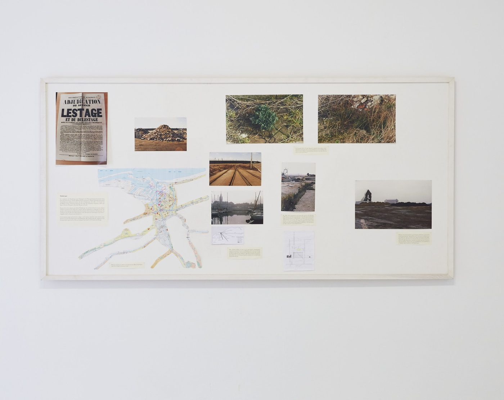

Maria Thereza Alves
Seeds of Change: A Floating Ballast Seed Garden, Bristol, 2012; series begun 1999
Sailing ships carried soil, sand and rubble as ballast, taking it on in one port and tipping it out in the next. Alves locates that soil in harbour cities, excavates it, and germinates whatever is still dormant inside. Seeds that have waited two or three hundred years come up.
For Bristol she worked with the designer Gitta Gschwendtner to build a garden on a barge moored in the harbour, planted entirely from ballast seed, so that the flora growing there is a record of the city’s shipping routes and of the trade that ran along them.
Figure
The artist
Maria Thereza Alves · Born 1961 in São Paulo; lives and works in Berlin and Naples.
Alves is a Brazilian artist long based in Berlin whose work recovers histories that official records leave out, often by going to the ground and digging. Seeds of Change, begun in the late 1990s and continued across European port cities, works from ballast flora: the seeds that travelled in the soil ships carried for stability and tipped out at the other end. She germinates that soil and reads what comes up as a record of the trade routes that produced it. She was a founder of Brazil's Green Party and has worked on indigenous land rights alongside the art.
“Celebrating the micro histories of plants and humans together.”
Curators’ note
Ships once took on soil as ballast to steady themselves, and tipped it out at the other end. Inside that soil were seeds, and in the mud of Bristol harbour some of them waited roughly two centuries without anybody intending to keep them. Alves excavated that mud and let it germinate on a floating garden. What grows is a record of where the ships came from, which is a record of the trade that sent them. It is the only collection here that nobody built, and it is still a perfectly good archive.
Afterwards, the artist’s own record of the work: mariatherezaalves.org